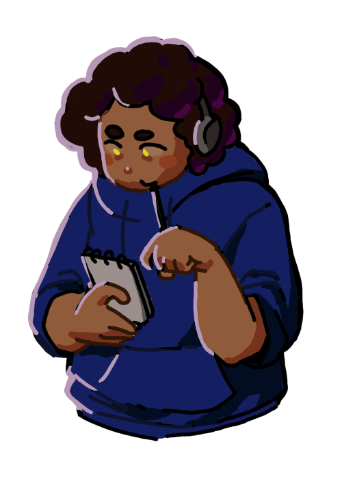
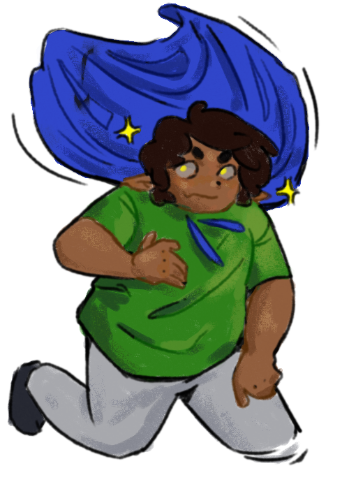

❖ I go by many names, but you may refer to me as KALEBBBB BBB b BB or REEEE R E GAAA LLL L.
❖ It is important to understand and recognise the humanity and existence between myself and others. I am not just my identities,
but I am also human and a wonderful thing that exists, just like everyone and everything.
❖ I make art. I think much about my own and other people's minds. I become intensely focused on certain things to the point of forgetting my other responsibilities.
I am human. I am proudly and sadly and excitedly and terribly and distantly and fully human. That's the beauty of it, my and everyone's light and shadows.
Its a delicate balance.
❖ I would generally be described as Black, Queer, and autistic; these identities are only important in understanding how I relate to others socially though,
and are only an aspect of my existence.
❖ My Philosophy ❖
❖ Know your limits, and respect them. ❖ This is all our first times being alive. ❖ Everything is FLUX! ❖
